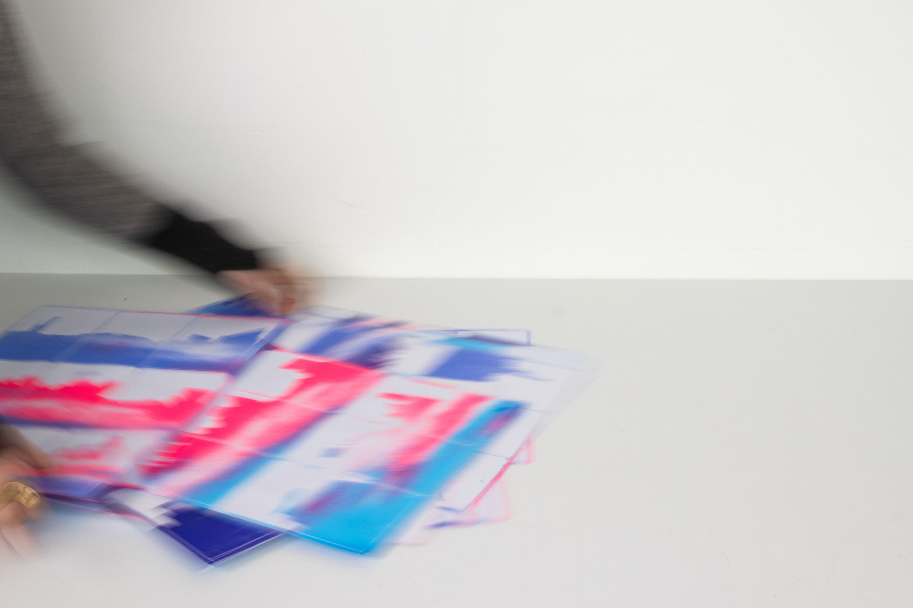
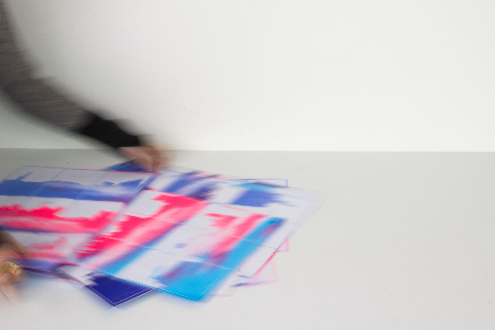

N°13
Titre
Voyage du Futur
Date
Avril 2023
Catégorie
Édition
Avec
Contexte
Un projet de groupe, pour développer ses compétences en sérigraphie, mais aussi nous questionner sur "le voyage du futur".
Réponse
Pour nous c'est un voyage au quotidien, c'est redécouvrir le bout de sa rue, voir la beauté d'un ciel nuageux...
Et comme les Impressionnistes donner des couleurs vibrantes à notre routine.
Mais puisque cette beauté retrouvée n'a de sens que si elle est partagée, nous avons décidé d'utiliser le format des cartes postales.
Outils et technique
Indesign / Sérigraphie
Suivant